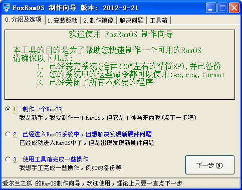
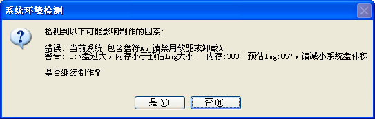
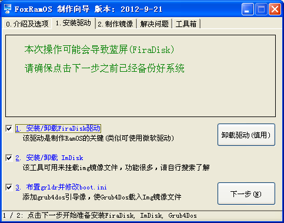
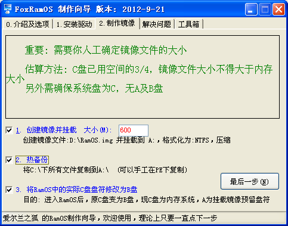
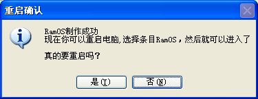
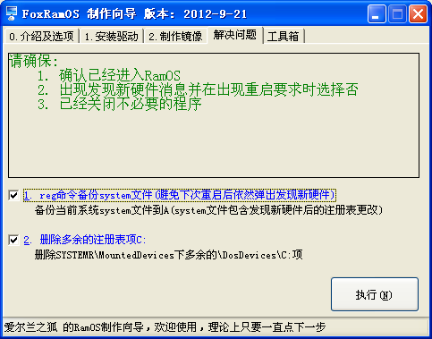
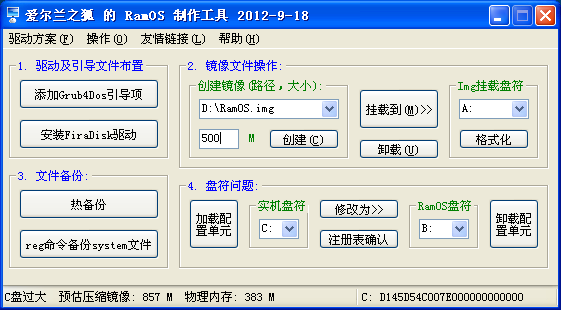

|
缘起: 一开始是使用深度的制作工具，不过由于过于简单，隐藏了不少细节，故到无忧学习如何手工制作后，兴起了制作辅助工具的想法 导航版缘起: 应Olsoul要求，方便未接触过RamOS的童鞋使用，简化制作步骤，尽量智能化 下载: FoxRamOS.7z 解压密码:55555 AHK源码:FoxRamOS.ahk FoxRamOS_Guide.ahk |
|
导航版截图(适用新手，简化步骤): 1: 选择操作界面，要制作RamOS，选1，然后点击下一步  1.1: 如果检测到系统不符合制作要求的(例如:系统精简不够，内存过小，未关闭虚拟内存，缺少必要文件)，会弹出对话框  2: 安装驱动界面，直接点击下一步  3: 制作镜像界面，填好镜像大小，直接点击最后一步  3.1: 制作成功，弹出要求重启对话框，选是直接重启，进系统选择FoxRamOS进入RamOS  4: 进入RamOS后会发现新硬件RamDisk,要求重启，此时选择否，打开本工具，切换到这个页面，点执行按钮即可  卸载驱动(2012-9-21新增按钮): 进入普通系统，运行本程序，切换到标签 1.安装驱动，点击卸载驱动按钮 |
|
原版截图(适用老鸟，一切可控，只简化手工操作):  |